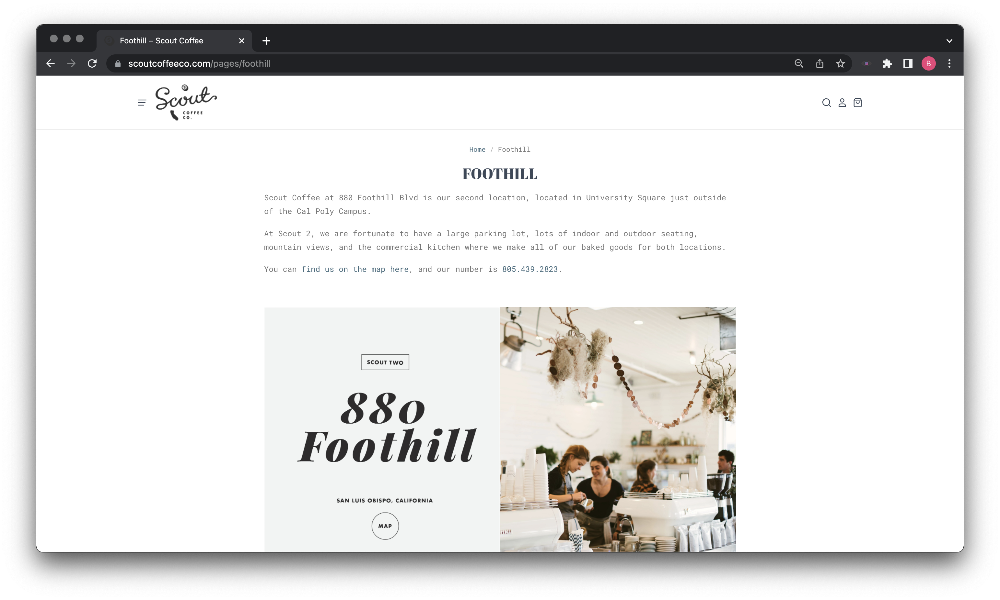
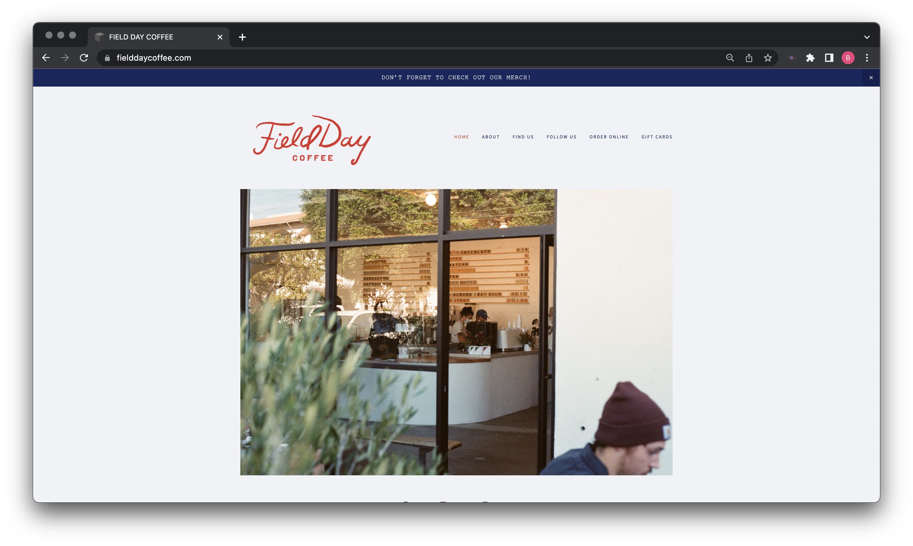
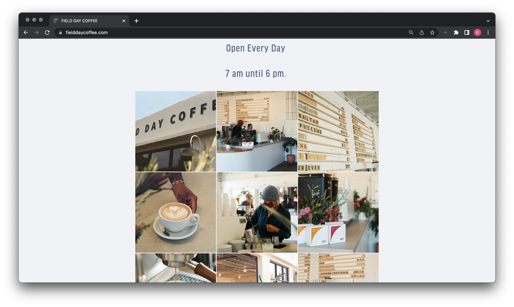

Final project proposal
Introduction
Sippppin' Coffee Bar
Sippppin'! Coffee Bar is a locally owned coffee bar, founded and owned by Cal Poly student Brenica Sipin. We have been proudly serving San Luis Obispo for 5 years with the help of our amazing and supportive staff. Sipppin Coffee Bar proudly brews our coffee in house and bake fresh goods every morning. Welcome to your new favorite coffee bar!
Target audience
The target audience for this coffee bar are young college students who are looking for a good place to study, socialize, and grab a quality cup of coffee or tea. Other customers can also include middle aged workers who work in the area, professors, or tourists who are exploring San Luis Obispo.
The ideal customerlike to explore new drink items and need different options based off of their different moods. They are looking for a quick bite and a beverage to go with it, and wants a social but study-friendly scene to spend their day. The customer is also okay with paying a little more for their coffee, especially because it is premium coffee and we offer specialty drinks.
Comparative analysis
Scout Coffee Co.

Alfred Coffee


Field Day Coffee
 Website content
Home
Welcome to Sippppin'! Coffee Bar, where you still find the best house brewed coffee and specialty drinks in all of San Luis Obispo! Sippppin' was found by Cal Poly student, Brenica Sipin, who is passionate about coffee and bringing people together.
[House baked pastries and Specialty Coffee Drink]
About
Ever since my first sip of coffee, I always knew that she wanted to open up her very own coffee shop. I loved the warm environment, scents from the bakery, and delicious brewed coffee ever since I was a little kid. Sippppin'! Coffee Bar is built on the values of community, togetherness, and well being. From our fresh baked pastries every morning to our monthly drink specials, Sippppin'! Coffee Bar has a place for everyone!
[Owner of Coffee Bar inside Coffee Bar]
Locations
Sippppin'! Coffee Bar is located at 111 Foothill Boulevard in San Luis Obispo.
We are open Monday-Sunday from 6:00AM to 6:00PM on weekdays, and 6:00AM to 3:00PM on weekends.
[Interior of Coffee Bar Building]
Menu
Drinks
Vanilla Latte
Double shot of espresso over milk and a helping of housemade vanilla – made with real vanilla bean.
$5.25
Matcha Latte
Shade-grown, single-origin, tea-master blended matcha with milk of your choice
$5.25
Almond Cappucino
Classic espresso and microfoam, with a creamy, almondy twist
$4.25
Monthly Specialty Drink
Ask your barista about our specialty drink of the month!
$6.00
[Coffee and Tea]
Food
Avocado Toast
Toasted and buttered sourdough bread, with smashed avocado, pickled shallots, fresh herbs, sea salt and cracked pepper makes for a wholesome snack or light meal!
$8.50
Super Oats
Our own mixture of grains and seeds served with your choice of milk or mylk on the side and we go big on the toppings to make this bowl delicious! We top the Super Oats with a little salted butter, brown sugar, fresh blueberries, and a little almond butter and sliced almonds.
$6.95
Fruit and Yogurt Compote
House-made Strawberry Compote + Organic, Plain, Probiotic Yogurt + House-made maple and honey granola, served in a 16oz container.
$6.75
Fresh Baked Pastries
See bakery display for daily choices from our in house bakery.
$3.00-$7.00
[Avocado Toast]